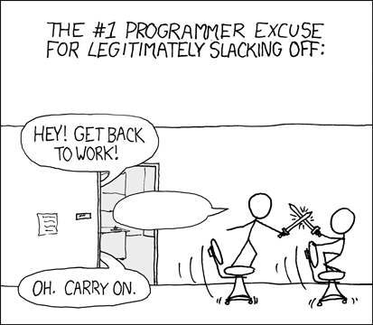

Serverless
⚡ Buzzword of the season ⚡
- twitter: @MislavCimpersak
- github: github.com/mislavcimpersak
Serverless
Serverless
FaaS
Function-as-a-Service
Providers
| AWS Lambda | Azure Functions | Google Cloud Functions |
|---|---|---|
| JS, PY, Java, C# | JS, PY, C#, F#, PHP, Batch, PowerShell | JS |
| S3, SNS, SES, DynamoDB, Kinesis, CloudWatch, Cognito, API Gateway, CodeCommit ... | Cloud Pub/Sub or Cloud Storage Object Change Notifications | Blob, EventHub, Generic WebHook, GitHub WebHook, Queue, Http, ServiceBus Queue, Service Bus Topic, Timer triggers |
Advantages
Idea to launch
No system administration
Automatic scaling
Parallelization
Change in mindset
Disadvantages
Vendor lock in
Cold start
Maturity
Deployment
-
AWS CLI
aws lambda update-function-code --function-name arn:aws:lambda:region:your-lambda-function --zip-file fileb://dist/function.zip --publish -
Serverless
serverless deploy -
Chalice
chalice deploy -
Zappa
zappa deploy prod

Examples
@realGrickiTop
main.py
def post_tweet(event, context):
poster = Poster()
poster.post()
zappa_settings.json
{
"prod": {
"aws_region": "eu-central-1",
"s3_bucket": "realgrickitop",
"remote_env": "s3://realgrickitop/secrets.json",
"apigateway_enabled": false
}
}
shell
zappa deploy prod
zappa invoke prod 'main.post_tweet'
- AWS servers on UTC
- Live debugging
- Zappa packages everything
XKCD Excuse Generator

app = Flask(__name__)
@app.route('/blank', methods=['GET'])
def blank():
with open(os.path.join(dir_path, 'blank_excuse.png'), 'rb') as blank:
return send_file(BytesIO(blank.read()),
attachment_filename='blank_excuse.png', mimetype='image/png')
@app.route('/', methods=['GET'])
def root():
...
if __name__ == "__main__":
app.run(host='0.0.0.0')
{
"prod": {
"app_function": "app.app",
"aws_region": "eu-central-1",
"profile_name": "mislavcimpersak",
"s3_bucket": "excuse-generator"
},
"dev": {
"extends": "prod",
"debug": true
}
}
- Image serving
- IOpipe monitoring and WSGI apps